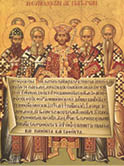
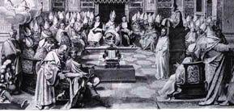
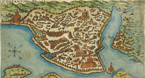
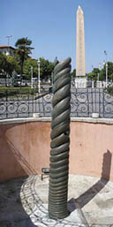
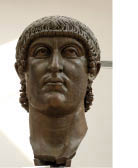

Dünyanın Merkezi “Yeni Roma” İstanbul’un Kuruluşu
Batı Roma sezarı Konstantin, Boğaziçi’ni ilk kez gördüğünde, Marmara bölgesine karada ve denizde iktidar rakibi Doğu Roma sezarı Licinius’la savaşmaya gelmişti. Haliç kıyılarında, zaten Roma toprakları içinde kalan küçük yerleşim birimi Byzantium’u fark etti. Bugün Topkapı Sarayı ve çevresinden ibaret Byzantium’un bir avuçluk nüfusu, zenginliğiyle göz kamaştırıyor ve İmparator Konstantin’in 330 yılında Ayasofya’nın temelini atacağı yerde yükselen görkemli Apollon Tapınağı, Haliç’te İsa’dan 600 yıl önce başlayan bir uygarlığa tanıklık ediyordu.
Büyük Konstantin, ordularıyla Trakya’ya yürüdü. Hasmı Licinius’u önce Edirne’de yendi. Ardından Marmara’ya ilerleyip düşmanını, Üsküdar (Khrysopolis) kıyılarında ve denizde bir daha dövdü. Boğaz’ın doğal savunma kolaylığını gördü, hazır gelmişken Haliç kıyılarını, kendi altın çağının “kentsel dönüşüm projesi” kapsamında değerlendirmeye karar verdi: Byzantium’u yıkacak, yerine tüm hasımlarını yenerek birleştirmeyi başardığı Roma İmparatorluğu’nun yeni başkentini kuracaktı!
“Kente yaptırdığı tüm Hıristiyan tapınaklarına rağmen cumhuriyetçi ve pagan geleneklerini sürdüren Eski Roma’nın, yeni kurduğu tek dinli imparatorluğun merkezi olamayacağına, kadim başkenti ikinci ziyaretinde karar vermişti. Eski Roma’daki akademiler, kitaplıklar artık bir İskenderiye’nin, Hatay’ın ya da Bergama’nın görkemiyle yarışamıyordu. Sıtma salgını yüzünden, gerek Roma, gerekse tüm İtalik Yarımadası nüfusu azalıyordu. Konstantin gibi öngörülü bir yönetici, Pars Orientalis diye anılan Doğu’nun, Batı’yla karşılaştırılamayacak üstünlükteki ekonomik zenginliklerini görmezden gelemezdi. İmparatorluğun ekseni ister istemez Doğu’ya kayıyordu ve İtalya’nın artçı bir üs konumuna düşmesi kaçınılmazdı.5”
324 yılında Boğaz kıyılarındaki küçük ve zengin Byzantion yerleşkesini, Nova Roma’ya dönüştürecek yıkım yapım çalışmaları başladığında Büyük Konstantin, Küçük Asya’ya doğru genişleyen mülkünü zaten Eski Roma’dan değil, Hıristiyanlık öğretisindeki ilk anlaşmazlığı çözmek için 325 yılında bizzat hakemlik yaptığı Birinci Ekümenik Konsil’in toplandığı, İznik’ten (Nikaia) yönetiyordu.6

325 yılında İznik Konsili’nde kabul edilen İnanç Bildirisi (Kredo)
Ama Yeni Roma, İtalik Yarımadası’ndaki kadim başkentin imar planına göre kurulacak, hatta eski Roma’nın daha görkemli ve modern bir kopyası olacaktı!

325 İznik Konsili

Constantinapolitano-Nova Roma
Konstantin’in kurdurduğu kentin merkezi, “Milion” diye adlandırılan ölçüt anıttı. Anıtın, kare biçiminde inşa edilen dört zafer takının üstünde yükselen kubbesi, Hıristiyanlığın en kutsal kalıtını barındırıyordu: İsa’nın gerildiği iddia edilen haçın, sözde aslını... “Esas Haç” diye ifade edilen ahşap haçı, Büyük Konstantin’in annesi İmparatoriçe Helena, 327 yılında hacı olmaya gittiği Kudüs’ten getirmişti. Ne kerametse Helena’nın kutsal topraklarda eliyle koymuş gibi bulduğu tahta haç, İsa gerildikten üç yüzyıl sonraya sağlam kalabilmişti...
Roma imparatorluk topraklarının tüm mesafeleri, artık Milion anıtından itibaren ölçülmeye başlandı. Başka bir deyişle yeni başkentin merkezi, dünyanın merkezi sayıldı. Emperyal mimarinin kilometre taşı Milion’un doğusuna düşen eski Afrodit Tapınağı’nın yerine yeni başkentin ilk büyük kilisesi, Aya İrini inşa edildi. Bu ilk kilisenin uyandırdığı hayranlık çok geçmeden gölgede kalacak ve harika mimarisi, 330’da yapımı başlayıp 360’da sona eren ve eski Apollon Tapınağı’nın yerinde yükselen, eşsiz görkemde Ayasofya tarafından geçilecekti.
Aya İrini ile Ayasofya’nın dört yüz metre berisinde, Yeni Roma’nın zaman için muazzam sayılan Hipodrom’u uzanıyordu. Devasa arenanın omurgasını (spina) aynı zamanda eksenini tayin eden bir teras oluşturuyordu. 324 yılında yapımı biten bu teras, Büyük Konstantin’in Yunanistan’ın Delfi şehrindeki Apollon Tapınağı’ndan getirdiği savaş ganimeti, Yılanlı Sütun’la7 süslendi. Yılanlı Sütun, Antik Yunanistan’ın Perslere karşı verdiği sonuncu savaşın, 31 Yunan sitesinin birleşerek MÖ 479 yılında Platea’da kazandıkları zaferin anıtıydı.
Sütunun bir de tılsımı vardı: Burma dikiti oluşturan yılan motifleri, şehri zararlı sürüngenlerden koruyacaktı.
Yılanlı Sütun’un dikildiği terasın doğusuna inşa edilen burgu merdivenlerden; merasim avluları, kışlalar, hamamlar, kabul salonları, çalışma büroları ve konutlardan oluşan Mega Palation (Bukoleon) diye anılan Büyük Saray’a ulaşılıyordu. Günümüzde, Sultanahmet Arastası ve Büyük Saray Mozaikleri Müzesi, bu sarayın kalıntıları üzerine kurulmuştur.
Emperyal başkentin kilometre taşı Milion anıtının batı kenarından başlayan geniş caddeye, Mese adı verildi. Büyük Konstantin, Mese (Bugünkü Divanyolu Caddesi) boyunca uzanacak ve “Konstantin Forumu” diye anılacak muhteşem meydanın oval mimari planını bizzat çizdi. Meydanın ortasına inşa edilen mermer kaidenin üzerine, imparatorun “eski” Roma’daki Apollon Tapınağı’ndan söküp getirttiği dikilitaş (bugünkü Çemberlitaş) yerleştirildi.
Antik Roma’daki tapınaktayken tepesinde, doğan güneşi selamlayan bronz bir Apollon heykeli olan sütun, 330 yılında Yeni Roma’ya dikildiğinde, üzerindeki Apollon yerine aynı pozda, doğuya bakarak güneşi selamlayan Büyük Konstantin’in bronz heykeli konuldu.

Yılanlı Sütun

Büyük Konstantin büstü
(MS 4. yüzyıla ait bu büstün, 1204
Konstantinopolis talanıyla Roma’ya
getirilmiş olması mümkündür.)
Aslında yeni heykelin yarısı Apollon, yarısı Büyük Konstantin’di. Çünkü eski heykelin tamamı sökülmemiş, kellesi ve iki kolu alınan güneş tanrısının muhteşem gövdesi üzerine imparatorun kafası ile kolları monte edilmişti.8
Heykelin yeni uyarlamasında, atletik Apollon vücudu üzerinden gururla Doğu’ya bakan Büyük Konstantin’in başını güneş ışınlarını simgeleyen bronz bir çember çevreliyor; sağ eli emperyal asayı tutarken, sol eli “Esas Haç”ın bir parçasını kavrıyordu.
O çağlarda dünya demek olan Roma’nın ilk Hıristiyan imparatoru, çoktanrılı ve tektanrılı sembolleri her zamanki gibi kaynaştırıyor; ama bu kez, tüm semboller yepyeni bir üstün varlığı, kendisini simgeliyordu.
5 Norwich/Bizans Tarihi, 1988.
6 Hemen hepsi Doğu Kiliselerinden gelen 300’den fazla din âliminin toplandığı İznik Konsili’nin ana tartışma konusu, Mesih İsa’nın gerçek Tanrı olup olmadığıydı. İskenderiye Kilisesi ruhbanı arasında başlayan hizip, Mesih İsa’nın dünyanın kuruluşundan önce Tanrı tarafından yaratıldığını iddia eden Arius ile Mesih İsa’nın ezelden beri var olan Tanrı Baba özünden olduğunu savunan Athanasius taraftarlarının çatışmasıydı. Büyük Konstantin’in ustalıkla şahsi fikrini kabul ettirdiği konsilde, Kilise önderlerinin çoğu, Mesih İsa’nın gerçek tanrı olduğu fikrinde birleştiler. Arius’un savı inkârcılıktan mahkûm edildi, yazılı kayıtların yakılmasına karar verildi ve hizipçi din âliminin İskenderiye Kilisesi’ne dönüşü yasaklandı. Bu ilk konsilde onaylanan İnanç Bildirisi, MS 325 yılından öteye tüm Hıristiyan mezheplerinin kabul ettiği ortak metinlerdendir.Ancak Balkanlar’a sürülen Arius’un sürgünden sonra İznik’e dönmesi ve yarattığı hiziple ortalığı karıştırmaya devam etmesi önlenemedi.
7 Persleri yenen 31 Yunan şehri, bu sütunu savaşta edindikleri tunçtan ganimetleri eriterek yaptırmıştı. Eşsiz kalitede bir sanat eseri olan dikit, gövdesi birbirlerine dolanmış üç yılandan oluşuyor ve yılanların kafaları, altın bir kazanın üç ayağını oluşturuyordu. Evliya Çelebi’ye göre İstanbul’daki on yedi tılsımlı burma dikitten biri olan Yılanlı Sütun, 17. yüzyıla kadar sağlamken, bir yeniçeri kılıcıyla yılan başlarını uçurduktan sonra tılsımını yitirdi. Yılan, çıyan, akrep gibi sürüngenler şehre yayıldılar. Tarihçi John Julius Norwich ise burma dikitin yılan başlarının, 1700 yılında sarhoş bir Leh diplomat tarafından kırıldığını öne sürüyor. Kayıp yılan başlarından biri sonradan bulunmuş olup halen İstanbul Arkeoloji Müzesi’nde sergilenmektedir.
8 Sonraki imparatorlar Julianus ve Theodosius da bir önceki heykel başını söktürüp kendilerininkini koydular. Eleksios Birinci Komnenos döneminde sütuna mermer bir Korintos başlığıyla altın yaldızlı bir haç dikildi. Bu haç, Osmanlı fethinden (1453) sonra indirildi. Arap tarihçi Kazvini’nin, 13. yüzyılda da çemberlerle sağlamlaştırılmış olduğunu yazdığı dikilitaş, 1672 yılındaki bir yangında da çok hasara uğradı. Sultan İkinci Mustafa zamanında kaidesi duvarlarla, dikiti de çemberlerle berkitildi. Çemberlitaş olarak anılan bu tarihsel kalıt, Cumhuriyet’ten sonra çevresini kuşatan yapılar kaldırılarak yeniden ortaya çıkarılmıştır. (Kaynak: Büyük Larousse) Bizans başlıklı kapsamlı eserin yazarı John Julius Norwich, Yeni Roma’nın mimarisine ilişkin verdiği bilgilerde, Çemberlitaş ile Dikilitaş’ın tarihçelerini karıştırmıştır. Büyük Konstantin’in MS 330’da Eski Roma’dan getirtip Mese/Divanyolu’na diktirdiği Apollon/Konstantin Sütunu’nu, İmparator Birinci Theodosius’un MS 390 yılında Hierapolis’ten getirtip Hipodrom’a (Sultanahmet Meydanı) koydurduğu Antik Mısır eserini dikilitaş olarak tanıtmıştır.